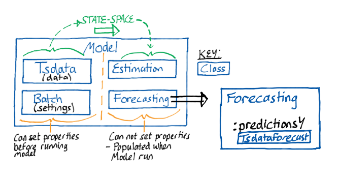
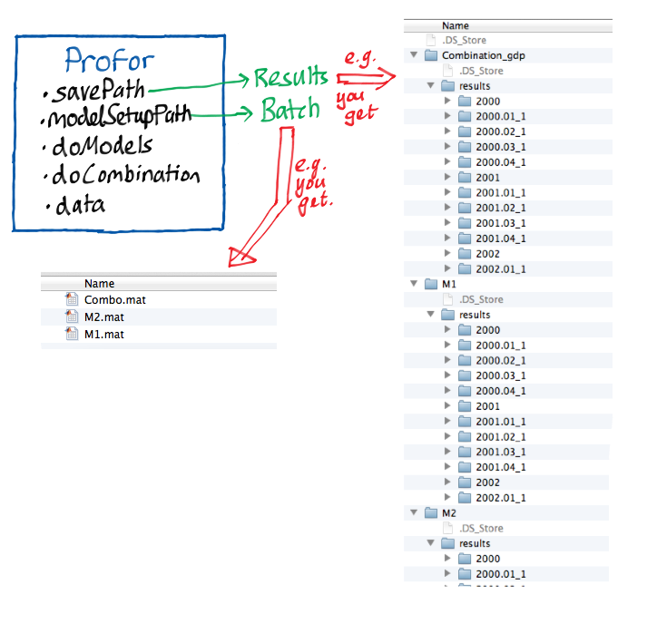
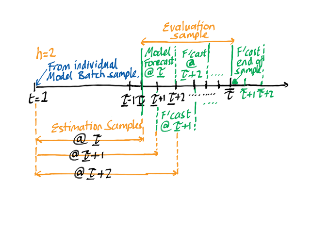

Profor Class Details
Some more details on the structure of the Profor class.
Contents
Profor
For reference, here is the stucture of the model class again:

Profor is essentially a wrapper class for estimating models recursively across a given sample, evaluating forecasts (Tsdataforecast), stored in predictionsY, and also combining these forecasts across models to produce new forecasts with various scoring methods.

Profor.savePath
This is where the estimation and combination results of the individual models are stored. The researcher can see two models (M1, M2) and the combination (combination_gdp). The parameter estimation in this case uses vintages 2000.01-2002.01. See Batchcombination for a description of how this is set-up.
Profor.modelSetupPath
In this folder reside the batch files for all the models, and an additional batch file to control the combination / evaluation (Batchcombination). This last file has to be named Combo.
Profor.doModels
This is a logical variable and if toggled to true, PROFOR takes the evaluation sample from Batchcombination object saved in the Profor.modelSetupPath directory, each model will be estimated recursively over this sample. If not, estimation is skipped.
The start date of the estimation sample for each model is taken from the Batch object for each individual model.
If the researcher supplies a path to a data source in Batchcombination.dataPath, then PROFOR will look into this folder for a corresponding real-time data set to the variables in Profor.selectionY. If found, it will find the vintage of data closest to the requested evaluation sample date and use this for estimation.

If no Batchcombination.dataPath is supplied, the Profor.data must be supplied with a Tsdata object containing the series in Profor.selectionY. Profor is hard coded in this case to truncate the data with a one period lag over the evaluation sample to mimic a real-time data set.
The results of this recursive estimation will generate the same number of Model objects as the number of evaluation periods. The results of the forecasts are stored within this model in the property forecasting as a Tsdataforecast object. You can see these models in the Profor.savePath.
Profor.doCombination
Profor.doCombination is a logical variable and if toggled to true, PROFOR will take all of the models supplied in Batchcombination.sampleA and evaulate these models with a given scoring method for each variable in Batchcombintation.selctionY across the evaluation sample.
Each Tsdataforecast object at each vintage over the evaluation sample for each model is re-loaded. Then, the forecasts are extracted from the forecasting property, in which the scores are also included. The models are then combined according to the weighting mechanism specified. The combined forecasts are stored in the same forecasting property of the Batchcombination model class. The scores from each individual model are stored in Estimation.resultCell.
This is repeated recursively over the estimation sample and the results are stored in a similar folder structure for each variable in the Profor.savePath directory.